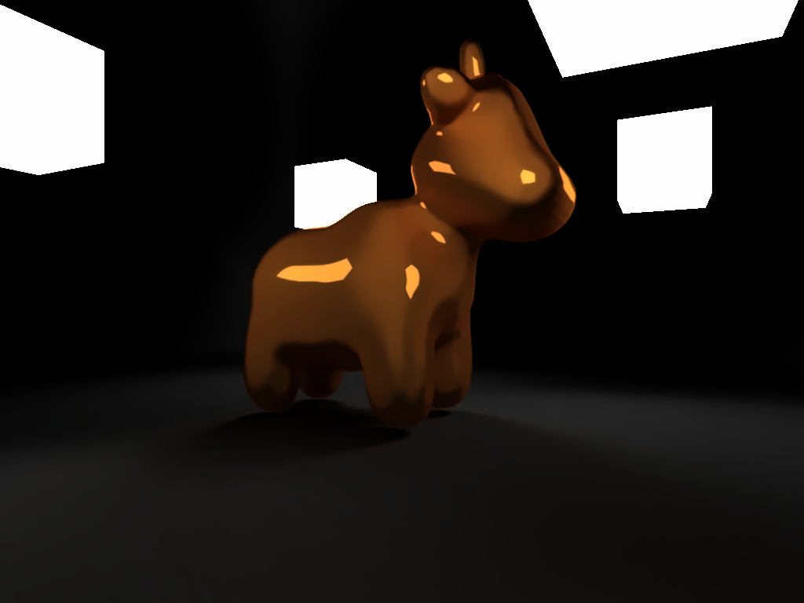
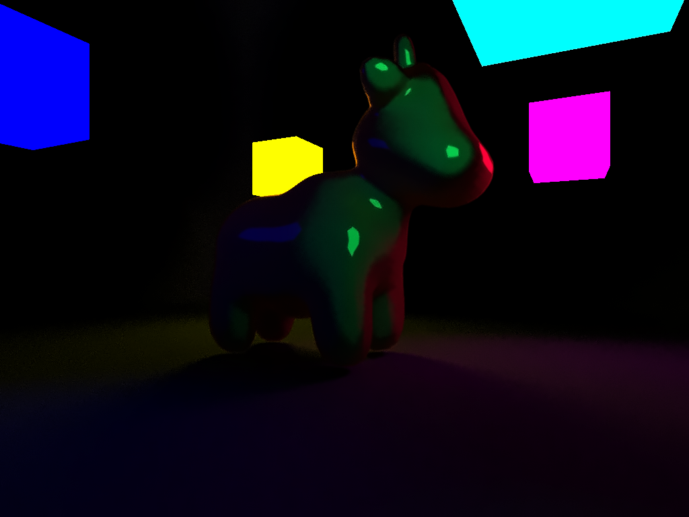

Github repo
Gallery
3200spp, 48cores, fastNlMeansDenoising by opencv

2048spp, 48cores, fastNlMeansDenoising by opencv

早就想动笔写写七月末的事了，很多事情都拖了下来，归根结底还是自己懒。
说好要一起做SRTP的室友沉迷刺客信条无法自拔，于是SRTP并没有很大进展。说好的社会实践偏偏在后半段因为路途艰险鸽掉了（改成杜撰）。对我来说，假期的前半程已经结束了。
看了一些SIGGRAPH上有趣的paper，读了three.js一些gems的源码，学了unity，杂七杂八的gems也都看了一些，复习了一下这学期CG课上的内容。另外还读了CMU 15-462的lecture notes，弥补了课上讲的不太到位的一些部分，尤其是离线渲染。今天刚买了电子版的PBRT，打算继续深入地读一读。
这个假期也必须保证有适当的代码量，最好能有一个自己喜欢的handy work。看了一下15462的第三个assignment，是在一个给定的framework上搭建自己的path tracer。和常见的只能渲染球之类基本几何体的path tracer不同，这个assignment要求手动实现一个用SAH优化的BVH来做mesh的空间管理，这样可以做到渲染任意三角形mesh。规划了假期做一个类似这种实现的path tracer，但目前还没有具体打算（感觉要鸽掉了）。另外打算基于pdf.js写个便于读书时记笔记的小工具。
把ext目录整理了一下，便于查阅。<链接>
three.js的粒子系统没有官方实现，旧版本的THREE.ParticleSystem已经改为THREE.Points了。Examples中有基于DR_DYNAMIC_DRAW的粒子系统实现，但仍需要每帧通过CPU计算生成粒子。另外，three.js还没有支持WebGL2Renderer，所以没有transform feedback。欲实现粒子系统只能另辟蹊径。
六月的时光悄悄地溜走了。
继续被UB和kano洗脑，被人叫做妥妥的声控，感觉很高兴 >w<
换了新壁纸，并且已经同步到博客背景图上了~
大作业的话，预先准备了将近十分钟的PPT，最后被告知要连着视频展示一起在5分钟内做完。。。和室友分工排练了半天，最终还是截去了很多内容… >_< 不过最终放的视频效果还是可以的（虽然没放声音）。上台演讲的时候，内心完全是一片白空白的，虽然不是很怯场，但是还是莫名感觉有点僵硬。讲话的时候太 紧张 / 专心 导致基本没有看到台下同学们的反应。很想知道他们对我的印象如何。
希望を失えばまた誰も彼女を見なくなるだろう。
路上の小石のように。
NV的流程图介绍该算法简直再清楚不过了：

统计模型的示例频谱是Phillips Spectrum：
$$
P_h(\vec k) = \left \langle { \left | {\widetilde h}^*(\vec k, t) \right | }^2 \right \rangle
$$
在统计学上使用如下模型来模拟Phillips Spectrum：
$$
P_h(\vec k) = \frac A { |\vec k|^4} { | \hat k \cdot \hat \omega | }^2 {e^{-\frac 1 { { |\vec k| }^2 L^2}}}
$$
生成Phillips Spectrum的像素着色器如下：